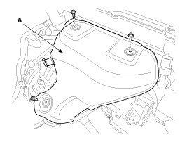
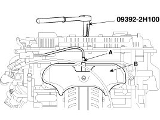
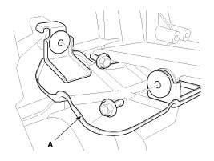
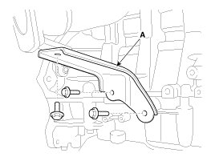
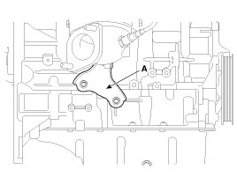

Repair Procedures
Removal and Installation
1. Remove the engine cover.
2. Disconnect the battery negative terminal.
Tightening torque:
4.0 - 6.0 N.m (0.4 - 0.6 kgf.m, 3.0 - 4.4 lb-ft)
3. ULEV: Disconnect the front oxygen sensor connector (A) and then remove it from the bracket.

SULEV: Disconnect the front and rear oxygen sensor connectors (A) and then remove them from the bracket.

4. Remove the front muffler (A).
Tightening torque:
39.2 - 58.8 N.m (4.0 - 6.0 kgf.m, 28.9 - 43.4 lb-ft)

5. ULEV: Remove the exhaust manifold heat protector (A).
Tightening torque:
9.8 - 11.8 N.m (1.0 - 1.2 kgf.m, 7.2 - 8.7 lb-ft)

SULEV: Using the SST (09392-2H100), remove the front oxygen sensor (A) and then remove the exhaust manifold heat protector (B).

Tightening torque
Oxygen sensor (A):
39.2 - 49.0 N.m (4.0 - 5.0 kgf.m, 28.9 - 36.2 lb-ft)
Heat protector bolts (B):
9.8 - 11.8 N.m (1.0 - 1.2 kgf.m, 7.2 - 8.7 lb-ft)
6. Remove the driveshaft heat protector (A).

7. Remove the exhaust manifold stay (A).
Tightening torque:
39.2 - 49.0 N.m (4.0 - 5.0 kgf.m, 28.9 - 36.2 lb-ft)
[ULEV]

[SULEV]

8. Remove the exhaust manifold (A) with the gasket (B).
Tightening torque:
29.4 - 34.3 N.m (3.0 - 3.5 kgf.m, 21.7 - 25.3 lb-ft)
[ULEV]

[SULEV]

NOTE:
When installing the intake manifold, tighten the nuts with pre-torque first, and then tighten the nuts with specified torque in the sequence shown.

9. Installation is reverse order of removal.
NOTE:
When installing, replace with a new gasket.